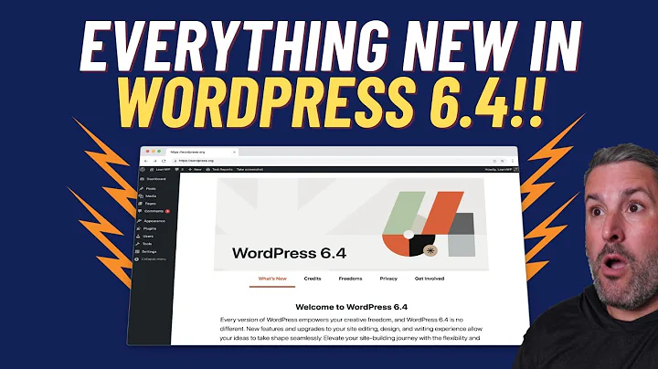

WordPress Lancaster
Wifi: CFGuest CoworkingLov3
WordPress 6.4 Release
by Austin Ginder
Is it safe to update?
Yes
Most likely your already on 6.4 due to automatic core updates
 twitter.com/austinginder/status/1722068843198062946
twitter.com/austinginder/status/1722068843198062946
 github.com/soflyy/oxygen-bugs-and-features/issues/3441
github.com/soflyy/oxygen-bugs-and-features/issues/3441
Video from the WP Minute

6 minutes 20 secondsyoutube.com/watch?v=WxU614zR_NY